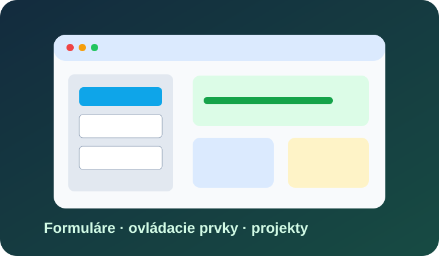

Prezentácia záverečných projektov
Prezentácie projektov – druhá skupina

Bezpečnosť a príprava pracoviska
Skontrolujte pracovisko a počítač. Závadu ihneď oznámte vyučujúcemu; poškodené alebo nebezpečné zariadenie nepoužívajte. Stručný súhrn hodiny pošlite cez EduPage.
Ciele hodiny
- Predstavíte problém, cieľ a rozsah svojho projektu.
- Vysvetlíte aspoň jedno dôležité technické rozhodnutie v natívnej aplikácii C++/Win32.
- Predvediete hlavný scenár použitia alebo pripravenú náhradnú ukážku.
- Pomenujete vykonané testovanie a jedno obmedzenie alebo ďalšie zlepšenie.
Hodina nadväzuje na návrh, implementáciu a dokumentáciu projektu v hodinách 53–62.
Odporúčaný formát na odskúšanie
Pracovný návrh, nie záväzné pravidlo: v jednej 45-minútovej hodine vyhraďte 5 minút na úvod a päť 8-minútových prezentačných blokov. Každý blok tvorí 5 minút prezentácie, 2 minúty na otázky a 1 minúta na výmenu prezentujúcich. Jeden blok môže patriť samostatnému študentovi alebo tímu. Ak počet projektov alebo potreby triedy tomuto rozvrhu nevyhovujú, upravte dĺžku alebo rozdeľte prezentácie do ďalšieho termínu.
Skontrolujte pracovisko, poradie prezentujúcich a spustenie ukážok ešte pred začiatkom. Projekt zostavte a vyskúšajte vopred; pri zlyhaní použite pripravené snímky obrazovky alebo záznam a vysvetlite, čo sa nepodarilo overiť.
Osnova prezentácie
- Problém a cieľ: komu aplikácia pomáha a čo rieši.
- Návrh a rozhodnutia: hlavné časti riešenia a dôvod jednej dôležitej voľby.
- Ukážka: predveďte jeden ucelený scenár práce s aplikáciou.
- Testovanie a obmedzenia: uveďte, čo ste skontrolovali a čo ešte nie je hotové.
- Záver: zhrňte výsledok a pomenujte ďalší možný krok.
Pri technickom vysvetlení odlíšte C++ logiku od natívnych Win32 prvkov. Ukážte len tie časti, ktoré pomáhajú pochopiť funkčnosť; nečítajte kód riadok po riadku.
Priebežné rozhodnutie: nepoznáte odpoveď
Počas otázok dostanete otázku na správanie časti aplikácie, ktoré ste netestovali. Vyberte najdôveryhodnejší postup.
Úloha pre prezentujúceho
Pripravte krátku prezentáciu podľa osnovy a predveďte jeden hlavný scenár projektu. Pred vystúpením overte zostavenie a spustenie aplikácie v cieľovom prostredí a pripravte náhradné vizuálne podklady.
Očakávaný výsledok: spolužiaci vedia pomenovať cieľ projektu, videli jeho hlavný scenár a počuli aspoň jeden dôkaz testovania aj jedno obmedzenie.
Kritériá: dodržte dohodnutý čas; prezentujte funkčnosť alebo poctivo označenú náhradnú ukážku; vysvetlite technické rozhodnutie; odpovedajte vecne a bez domnienok.
Časový priebeh
- 0–5 min: bezpečnostná kontrola, poradie, pravidlá otázok a technická pripravenosť.
- 5–13, 13–21, 21–29, 29–37, 37–45 min: päť prezentačných blokov; každý 5 minút vystúpenie, 2 minúty otázky a 1 minúta výmena.
Kontrolný zoznam prezentujúceho
- Dokážem jednou vetou vysvetliť problém a cieľ?
- Viem spustiť projekt a predviesť hlavný scenár?
- Mám pripravené snímky alebo záznam pre prípad technického zlyhania?
- Viem uviesť konkrétny test, výsledok a obmedzenie?
- Viem vysvetliť jedno technické rozhodnutie a odpovedať bez domýšľania?
Kontrolné otázky
- Ktoré časti má obsahovať stručná prezentácia projektu?
- Čo urobíte, ak sa živá ukážka nespustí?
- Ako doložíte, že hlavný scenár funguje?
- Čo poviete, ak odpoveď na otázku nemáte overenú?
Pre vyučujúceho
Upozornite, že odporúčaný čas a počet blokov sú návrhom na odskúšanie, nie ustanoveným pravidlom kurzu. Pri hodnotení zaznamenajte konkrétny dôkaz, nie iba všeobecný dojem; návrh pracovnej rubriky je v lekcii 65. Ak živá ukážka zlyhá, oddeľte technický problém prezentácie od preukázaných výsledkov testovania.
Odpovede: (1) problém a cieľ, návrh/rozhodnutia, ukážka, testovanie/obmedzenia, záver; (2) stručne pomenovať problém a prejsť na pripravenú náhradnú ukážku; (3) ukázať konkrétny, vopred vykonaný test a jeho výsledok; (4) priznať neistotu a navrhnúť spôsob overenia.
Podpora: študentovi, ktorý potrebuje pomoc, poskytnite osnovu s piatimi bodmi, umožnite skúšku nanečisto a pomôžte mu vybrať jeden hlavný scenár namiesto rozprávania o celom zdrojovom kóde.
Poznámky a povinné vedomosti, ktoré si zapamätať z hodiny
- Prezentácia má vysvetliť problém, riešenie a dôkazy funkčnosti.
- Ukážku si vopred zostavte a otestujte; pripravte si náhradný postup.
- Rozlišujte medzi tým, čo aplikácia preukázateľne robí, a tým, čo zostáva nedokončené alebo neoverené.
- Pri otázke, na ktorú nepoznáte odpoveď, nespekulujte; povedzte, ako by ste ju overili.
- Dodržte dohodnutý čas a zamerajte sa na jeden ucelený scenár použitia.